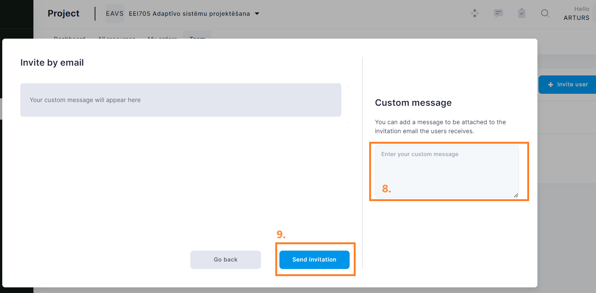

WALDUR: Access the HPC Platform
The heart of the National Open HPC platform is WALDUR, a user-friendly self-service portal for requesting and managing access to computing resources.
The built-in Marketplace offers a catalog of HPC services provided by Latvian academic institutions (currently RTU and LU), including:
Virtual desktops
HPC clusters
Jupyter notebook environments

Who Can Access the Platform?
The platform is Open:
External users are welcome to use the platform, not just members of core institutions.
Partner tools and services could be integrated to extend marketplace offer.
Access to HPC services is currently by invitation only. Users without an invitation can still log in and explore the portal, but with limited service availability.
How to get invited:
Research groups, course instructors, or individual students working on research or thesis projects should contact the RTU HPC center.
Students enrolled in courses that require HPC services should receive invitations from their course instructors.
Supported Authentication Methods
Authentication is handled via GEANT MyAccessID, which supports:
EduGAIN – Log in using your university credentials
eIDAS – Use your national electronic ID
Connect to the Self-Service Portal
Visit the HPC Platform: https://nohap.hpc-net.lv
Please start by clicking on [Sign in with RTU HPC]

By selecting the MyAccessID method, you should be able to authenticate with your university login details or eEIDAS (eParaksts for Latvian citizens).

In MyAccessID window under “Login with” search for your university’s identity provider.

In case of the Riga Technical University, select identity provider “Riga Technical University (Office 365)”.

Similar to University of Latvia

and Riga Stradiņš University

You will be redirected to your organizations identity provider authorization portal, in this case RTU ORTUS. Please follow all authentication steps begining with your login:

Later confirm authentication by scrolling down MyaccessID warning message:
After successful authentication you will be asked to confirm[ACCEPT] you name and email in Waldur system profile:

Invite participants
In order to invite participants to the Project/Study course you must have at least Manager role in this Project.
Follow these steps to get to invitation form:
Then fill invitation form with members’ email address[4.] and propper role[5.] in project - “member” in this case.
With + button you can add additional participants to this invitation session.
Last activity is to add custom message to invitation email, then submit[9.] to finish invitation procedure. 